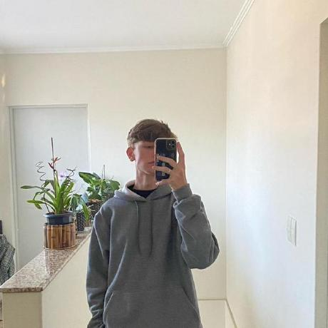

Carlos Eduardo Gnatkoski
Idade: 20 anos
Estado civil: Solteiro
Contato
Telefone: (42)99867-6720
Email: cadugnatcc@gmail.com
Formação
2021 - 2023 | Ensino Médio Completo
2024 - 2026 | Cursando Ciência da Computação
Cursos
2014 - 2018 | Curso de inglês (Influx)
Curso de informática - 96h (SENAR)
Experiência
2021 - 2023 | Yazaki do Brasil
Gestão de materias e Peças
Análise de Indicadores
Criação de planilhas
Objetivo
Busco uma oportunidade para desenvolver minhas habilidades, adquirir novos conhecimentos e contribuir de forma responsável e dedicada com a empresa, sempre buscando crescimento profissional e bons resultados.